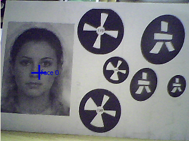

NAOqi Vision - Overview | API | Tutorials
See also
ALFaceDetection is a vision module in which NAO tries to detect, and optionally recognize, faces in front of him.
ALFaceDetection is based on a face detection/recognition solution provided by OKI with an upper layer improving recognition results.
Face detection detects faces and provides their position, as well as a list of angular coordinates for important faces features (eyes, eyebrows, nose, mouth).
To make NAO not only detect but also recognize people, a learning stage is necessary. For further details, see Learning stage for recognition section.
Recognition feature returns for every image the names of people that are recognized.
Temporal filter: in addition, there is temporal filter output to easily build higher level features using recognition. Indeed we don’t want NAO to say “Hello Michel” several times per second, so someone’s name will only be output the first time he is recognized and will be placed in a short term memory. This memory will be kept as long as some faces is not only recognized but detected by NAO. As soon as there are more than 4 seconds without detecting any face, the short term memory is cleared and Michel name will be output again if NAO encounters him. This is that output that is used in the Choregraphe Face Reco box.
Once ALFaceDetection is started, results are written in a variable in ALMemory called “FaceDetected” organized as follows:
FaceDetected =
[
TimeStamp,
[ FaceInfo[N], Time_Filtered_Reco_Info ],
CameraPose_InTorsoFrame,
CameraPose_InRobotFrame,
Camera_Id
]
TimeStamp: this field is the time stamp of the image that was used to perform the detection.
TimeStamp =
[
TimeStamp_Seconds,
Timestamp_Microseconds
]
FaceInfo: for each detected face, we have one FaceInfo field.
FaceInfo =
[
ShapeInfo,
ExtraInfo[N]
]
ShapeInfo: shape information about a face.
ShapeInfo =
[
0,
alpha,
beta,
sizeX,
sizeY
]
ExtraInfo: shape information about a face.
ExtraInfo =
[
faceID,
scoreReco,
faceLabel,
leftEyePoints,
rightEyePoints,
leftEyebrowPoints,
rightEyebrowPoints,
nosePoints,
mouthPoints
]
EyePoints =
[
eyeCenter_x,
eyeCenter_y,
noseSideLimit_x,
noseSideLimit_y,
earSideLimit_x,
earSideLimit_y,
topLimit_x,
topLimit_y,
bottomLimit_x,
bottomLimit_y,
midTopEarLimit_x,
midTopEarLimit_y,
midTopNoseLimit_x,
midTopNoseLimit_y
]
EyebrowPoints =
[
noseSideLimit_x,
noseSideLimit_y,
center_x,
center_y,
earSideLimit_x,
earSideLimit_y
]
NosePoints =
[
bottomCenterLimit_x,
bottomCenterLimit_y,
bottomLeftLimit_x,
bottomLeftLimit_y,
bottomRightLimit_x,
bottomRightLimit_y
]
MouthPoints =
[
leftLimit_x,
leftLimit_y,
rightLimit_x,
rightLimit_y,
topLimit_x,
topLimit_y,
bottomLimit_x,
bottomLimit_y,
midTopLeftLimit_x,
midTopLeftLimit_y,
midTopRightLimit_x,
midTopRightLimit_y,
midBottomRightLimit_x,
midBottomRightLimit_y,
midBottomLeftLimit_x,
midBottomLeftLimit_y
]
Time_Filtered_Reco_Info can be equal to:
CameraPose_InTorsoFrame: describes the Position6D of the camera at the time the image was taken, in FRAME_TORSO.
CameraPose_InRobotFrame: describes the Position6D of the camera at the time the image was taken, in FRAME_ROBOT.
Camera_Id: gives the Id of the camera used for the detection (0 for the top camera, 1 for the bottom camera).
Performances
Size range for the detected faces:
around 3m with v3.x VGA cameras and more than 2m on v4 HD cameras.
Maximum: ~160 pixels in a QVGA image
Tilt: +/- 20 deg (0 deg corresponding to a face facing the camera)
Rotation in image plane: +/- 20 deg
Limitations
Performances
When learning someones face, the subject is supposed to face the camera and to keep a neutral face because a neutral face is between sadness and hapyness. Otherwise, it would be harder to recognize someone sad if he was smiling during the learning process.
In order to get a more robust output, NAO checks first that he recognises the same person in 2 consecutive images from the camera before outputing the name.
Sometimes, depending on a change of location or haircut, a known face can be difficult to recognize. To improve the robustness, a reinforcement process as been added. If someone is not recognized, or mistaken for someone else, just learn him again. This learning will be added to that person’s database. After some days, you should get more reliable recognitions.
Limitations
Recognition is less robust than detection regarding pan, tilt, rotation and maximal distance. Reason is that the recognition algorithm doesn’t have a 3D representation of the person to recognize and uses some info like distances between keypoints for the recognition (in a way functionning partially like an identikit would do). If we turn the head, distances ratios will be modified.
Performances
The learning stage is an intelligent process in which NAO checks that the face is correctly exposed (e.g. no backlighting, no partial shadows) in 3 consecutive images.
Limitations
The learning stage can only be achieved with one face in the field of view at a time.
To get a feel of what the ALFaceDetection can do, you can use Monitor and launch the vision plugin. Activate the face detection checkbox and start the camera acquisition. Then, if you present your face to the camera - or show a picture with a face on it - Monitor should report the detected faces with blue crosses.
Another way to use face detection is to launch the Choregraphe Walk Tracker or WB Tracker boxes and switch default value from Red Ball to Face. Doing so, you can ask NAO to move toward the person in order to always keep the face in the middle of his field of view.
Learning stage can be done via the learnFace bound method of the API or through user friendly interface of Choregraphe Learn Face box.
Note
The algorithm requires better conditions for the learning stage than the ones needed for detection.
Note
You can launch the WB Tracker box in parallel with the learning stage so the face to learn will always be in the middle of NAO’s field of view.